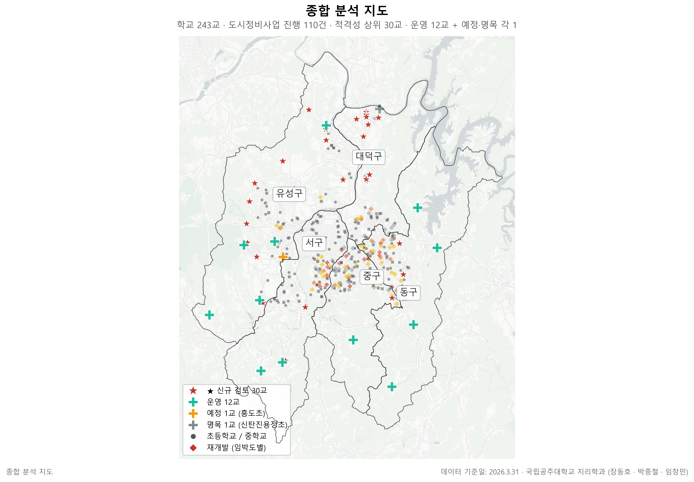
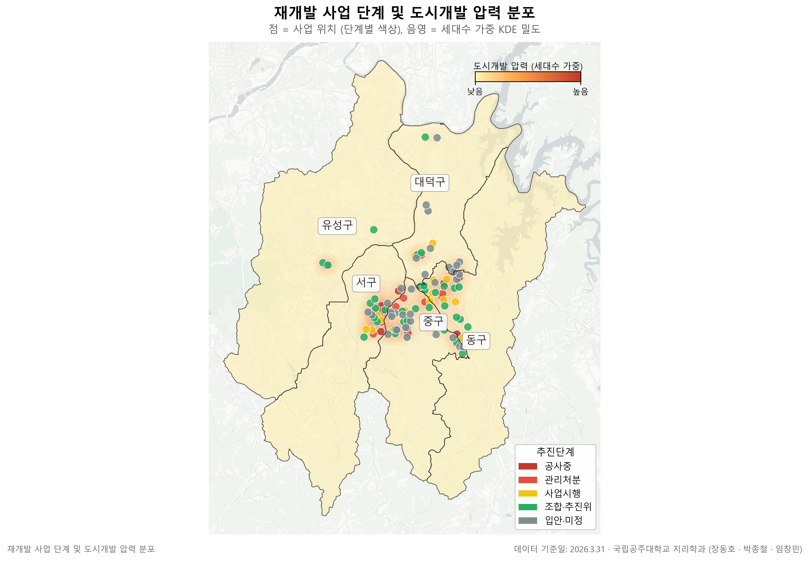
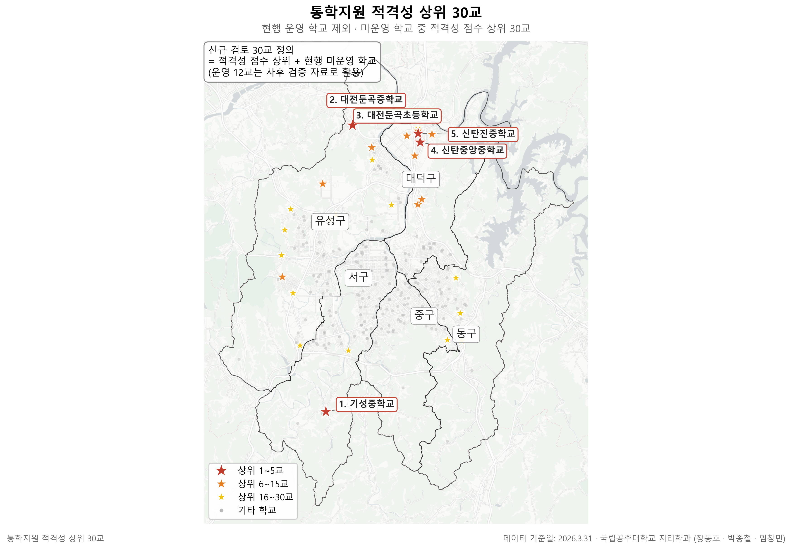
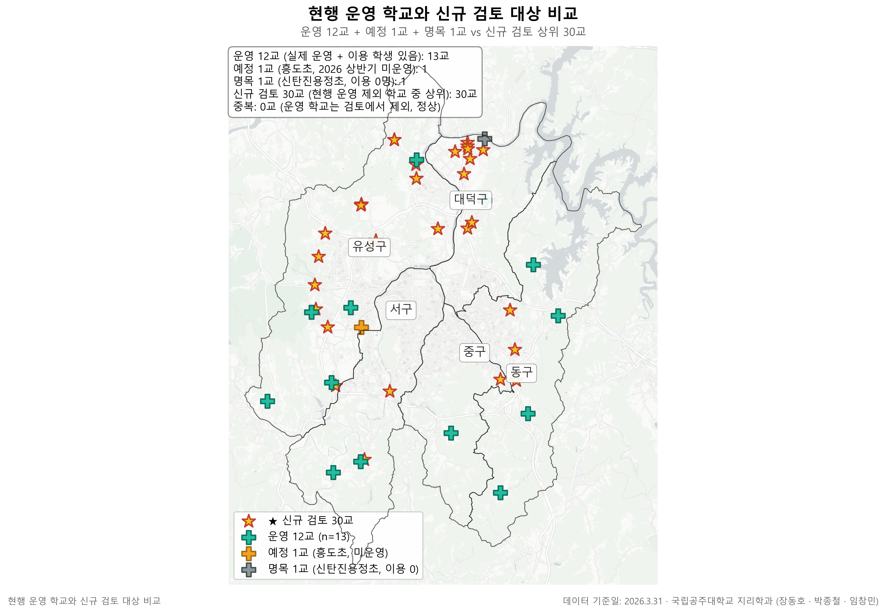
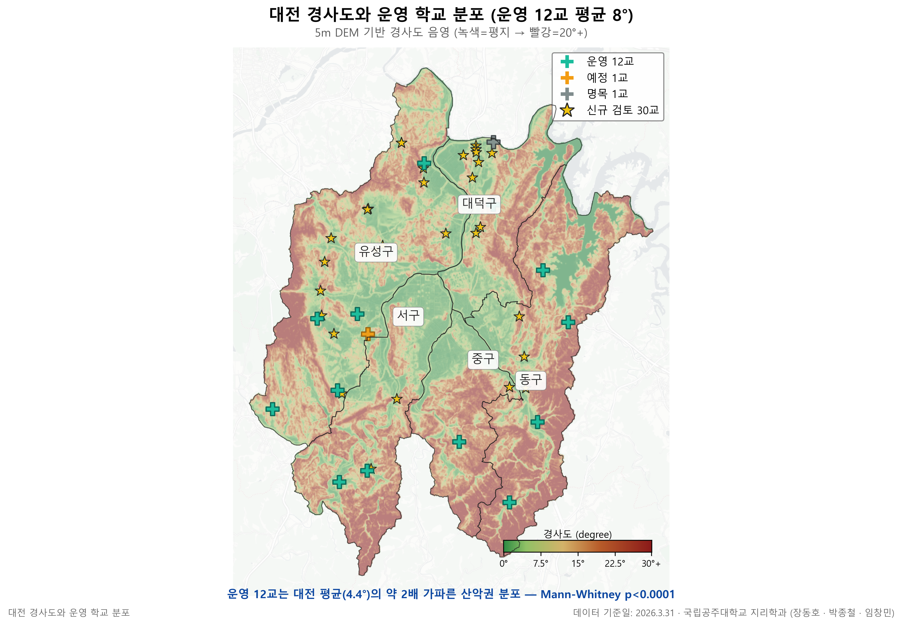
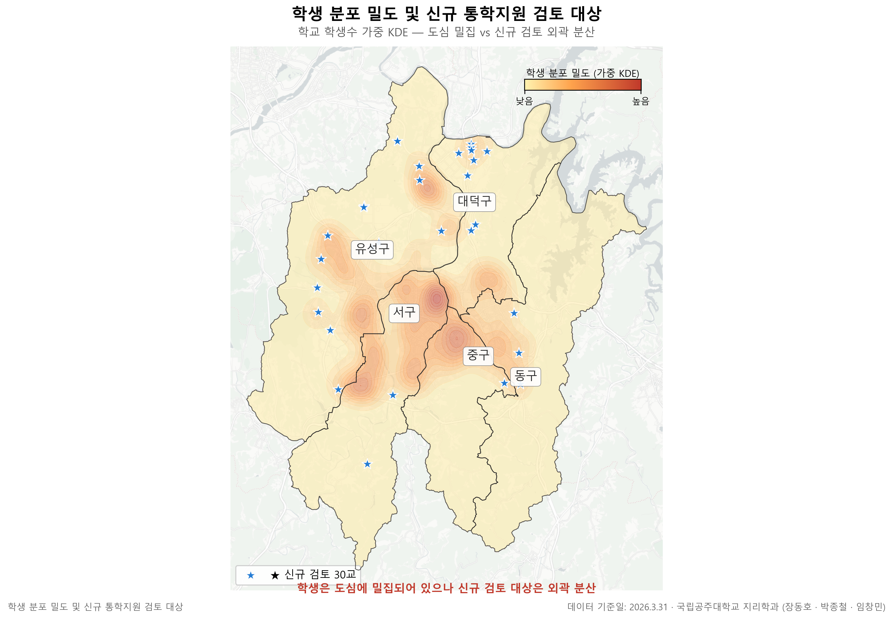
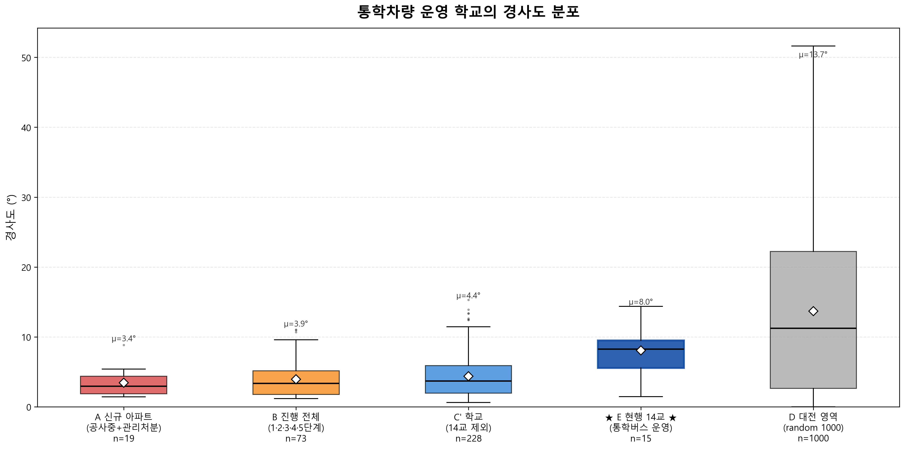

GIS 기반 통학환경 종합 분석 플랫폼
📅 데이터 기준일: 2026. 3. 31. 🔬 현재 진행: 외부환경 분석 (도시개발 + 경사도) — 다른 분석 영역 추가 예정 🚌 통학차량 14교 = 운영 12교 + 예정 1교(흥도초, 임시배치) + 명목 1교(신탄진용정초, 이용 0명) 👥 연구진: 국립공주대학교 지리학과 장동호 · 박종철 · 임창민
학교 243교 · 정비사업 120건 영향권(1km/1.5km) · 경사도 음영 · 우선순위 점수 · 적격성 분석 — 단일 인터랙티브 맵에서 모두 확인

학교 243교 · 재개발 110건 · 적격성 상위 30교 · 운영 12교 + 예정·명목 각 1

재개발 사업 단계별 점 + KDE 도시개발 압력 (세대수 가중) — 대전 영역 마스킹

신규 검토 대상 30교 — 등급별(1~5/6~15/16~30) + 상위 5교 자동배치 라벨

운영 12교(청록) + 예정 1교 흥도초(노랑) + 명목 1교 신탄진용정초(회색) vs 검토 30교

5m DEM 경사도 음영 + 운영 12교 분포 (평균 8°) — 산악권 집중 (p<0.0001)

학생수 가중 KDE — 행정구역 마스킹, 도심 밀집 vs 신규 검토 외곽 분산

현행 통학차량 운영 학교의 경사도 분포 — 점수 산식의 사후 검증 (5박스)
재개발·재건축 1km 영향권 가중 점수 상위 30교
현행 14교 제외, 미운영 학교 중 적격성 상위 30교
정비사업별 1km/1.5km 영향권 내 학교 집계
사업 추진단계(임박도)별 영향 학교 집계
단기·중기·장기 시나리오별 통학버스 수요
미래 시나리오 운용 우선 학교 30교
통합 우선순위 상위 30교 추출
243교 통학지원 우선순위 종합 점수 (적격성 0.70 + 도시개발영향 0.30)
적격성 점수 상위 30교
적격성 산정 v2 (가중치 조정안, 검토용)
동급학교밀도 0.50 + 도심거리 0.30 + 학교규모 0.20 가중합
트램 14개 공구 공사 영향 학교 상세
공구별 영향 학교 수 요약
45개 정거장-학교 도보 접근성
{kind=link}
{kind=link}
{kind=link}
{kind=link}
{kind=link}
{kind=link}
{kind=link}